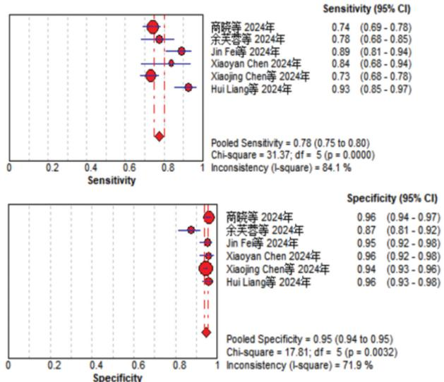
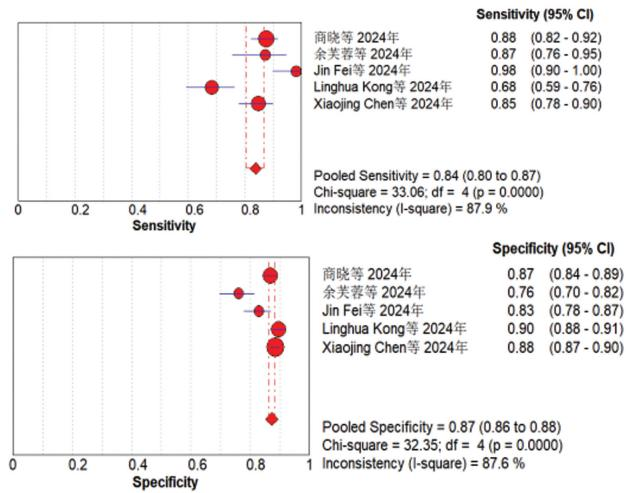

1Background & Objective
13.83/10万
China incidence 2022
HPV
low specificity
TCT
low sensitivity
- Single tests fall short: HPV DNA cannot distinguish transient from persistent infection; cytology is operator-dependent.
- Methylation rationale: promoter hypermethylation silences tumor-suppressor genes — an early, quantitative molecular signal.
- Aim: systematically evaluate combined PAX1/JAM3 methylation accuracy for HSIL (CIN2+/CIN3+).
2Methods
8
databases
7
studies included
QUADAS-2
quality tool
- Search: CNKI, Wanfang, VIP, CBM, PubMed, Embase, Web of Science, Cochrane — from inception to Feb 10, 2024; PROSPERO-registered.
- Inclusion: diagnostic studies of PAX1/JAM3 dual methylation with 2×2 table data (TP/FP/TN/FN), histopathology reference standard.
- Quality: QUADAS-2 double-blind appraisal; heterogeneity via Spearman threshold analysis; Meta-Disc 1.4 pooling.
- Outcomes: pooled Se, Sp, PLR, NLR, AUC, DOR for CIN2+ and CIN3+.
2015–2024
publication window
2×2
table data required
CN
+ EN databases
- Language: Chinese (CNKI/Wanfang/VIP/CBM) and English (PubMed/Embase/WoS/Cochrane) sources combined.
- Threshold effect: Spearman correlation evaluated before pooling; Meta-Disc used for bivariate accuracy synthesis.
- Reference standard: internationally accepted histopathology diagnosis; duplicate reports excluded.
Se 0.78
CIN2+ pooled
Sp 0.95
CIN2+ pooled
AUC .97
CIN2+
方法要点：双人独立提取、QUADAS-2 质量评价、阈值效应检验与 Meta-Disc 1.4 合并——保证诊断准确性综合的稳健性。
检索覆盖 8 个中英文数据库至 2024 年 2 月，纳入 7 项诊断试验，共提取四格表数据 7 组。
Meta-analysis follows PRISMA framework; independent dual data extraction with third-party arbitration.
3CIN2+ — Pooled Diagnostic Accuracy

0.78
Se [0.75–0.80]
0.95
Sp [0.94–0.95]
- Rule-in power: PLR 14.61 — positive methylation markedly raises HSIL probability.
- Rule-out power: NLR 0.202 — negative result strongly reduces high-grade risk.
- Overall DOR: 77.36 [43.1–139.0] — excellent discriminative ability.
7 studies pooled · AUC 0.9694 · consistency supports triage application in screening follow-up.
4CIN3+ — Pooled Diagnostic Accuracy

0.84
Se [0.80–0.87]
0.87
Sp [0.86–0.88]
- Higher Se: pooled sensitivity rises to 0.84 for CIN3+ — strongest for clinically important lesions.
- Stronger exclusion: NLR 0.172 — negative result nearly rules out CIN3+.
- DOR: 34.76 [20.1–60.1] · AUC 0.9251 — high overall accuracy.
CIN3+ is the clinical action threshold — high sensitivity supports safe deferral of colposcopy when negative.
5Likelihood Ratios & Interpretation
0.9694
CIN2+ AUC
0.9251
CIN3+ AUC
- Strong rule-in: PLR 14.61 (CIN2+) — a positive PAX1/JAM3 methylation result markedly increases HSIL probability.
- Strong rule-out: NLR 0.202 — a negative result substantially reduces the chance of high-grade disease.
- Clinical role: supports methylation as an objective triage tool for cervical screening follow-up.
- Pre-test caution: interpret alongside local prevalence & cytology/HPV context — pooled values span heterogeneous settings.
QUADAS-2 quality assessment; threshold-effect analysis performed; Meta-Disc 1.4 bivariate pooling.